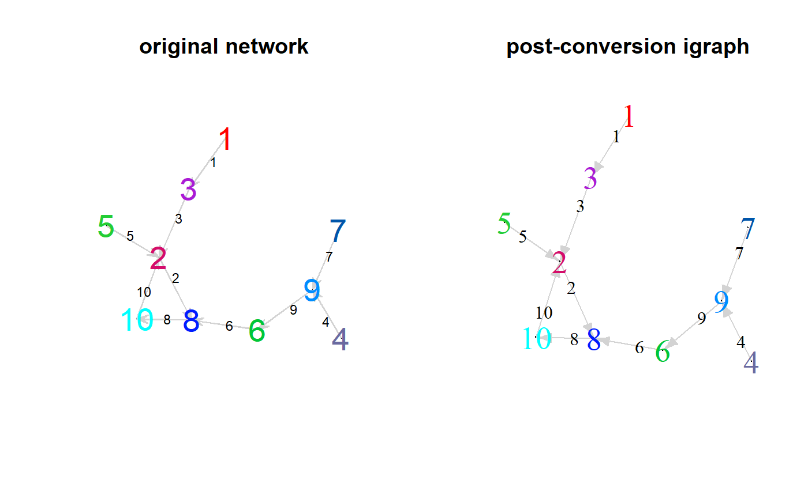
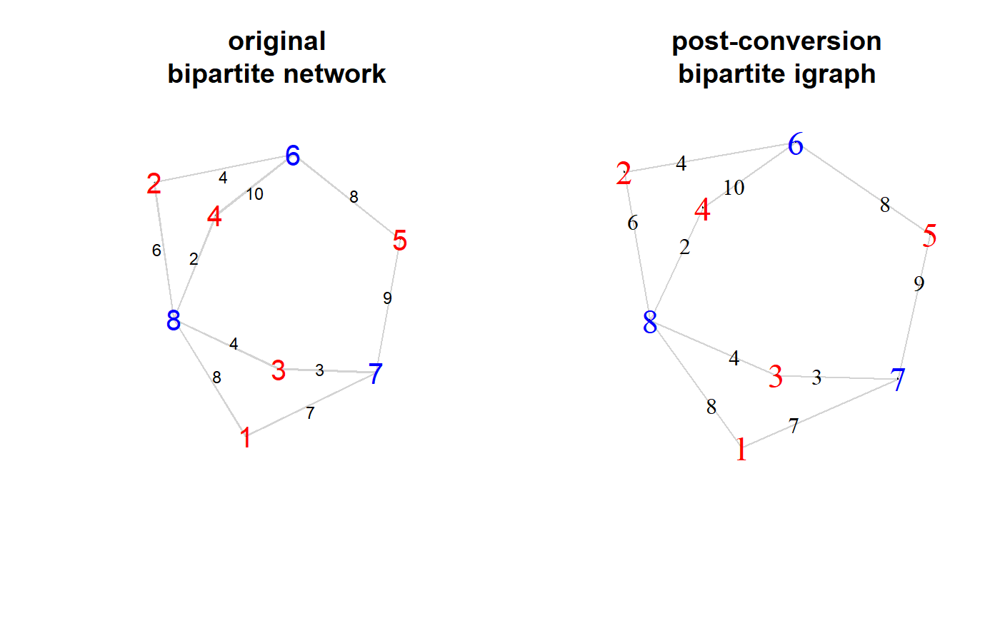

Accurately map foreign graph data to igraph objects.
as_igraph(x) # S3 method for bridge_net as_igraph(x) # S3 method for igraph as_igraph(x) # S3 method for network as_igraph(x) # S3 method for tbl_graph as_igraph(x)
| x |
|
|---|
An igraph (igraph::graph) object.
as_igraph() converts x to an intermediate bridge_net object that is capable of
mapping metadata, edges, vertices, and attributes (edge, vertex, and graph-level)
to a new, valid igraph object.
library(snatools) suppressPackageStartupMessages(library(network)) color_palette <- colorRampPalette(c("red", "purple", "green", "blue", "cyan")) # simple, 1-mode network to igraph conversion ========================================= n_vertices <- 10L adjacency_matrix <- rbinom(n_vertices, 1L, prob = 0.1) %>% replicate(n = n_vertices, expr = .) %>% apply(2L, sample) %>% t() nw1 <- network(adjacency_matrix, directed = TRUE) coords <- network.layout.fruchtermanreingold(nw1, layout.par = NULL) nw1 %v% "color" <- color_palette(network.size(nw1)) nw1 %e% "lab" <- seq_len(sum(adjacency_matrix)) nw1#> Network attributes: #> vertices = 10 #> directed = TRUE #> hyper = FALSE #> loops = FALSE #> multiple = FALSE #> bipartite = FALSE #> total edges= 10 #> missing edges= 0 #> non-missing edges= 10 #> #> Vertex attribute names: #> color vertex.names #> #> Edge attribute names: #> labig1 <- as_igraph(nw1) ig1#> IGRAPH 60c47ec DN-- 10 10 -- #> + attr: color (v/c), name (v/n), lab (e/n) #> + edges from 60c47ec (vertex names): #> [1] 3-> 2 5-> 2 10-> 2 1-> 3 9-> 6 2-> 8 6-> 8 4-> 9 7-> 9 8->10# manually comparing original and converted networks ================================== as_bridge_net(nw1)$vertices#> # vertex_data_frame: 10 x 2 #> .name color #> 1 1 #FF0000 #> 2 2 #D40E6A #> 3 3 #AA1CD5 #> 4 4 #6A6AA0 #> 5 5 #23CD35 #> 6 6 #00C638 #> 7 7 #0055A9 #> 8 8 #001CFF #> 9 9 #008DFF #> 10 10 #00FFFF #>#> # vertex_data_frame: 10 x 2 #> .name color #> 1 1 #FF0000 #> 2 2 #D40E6A #> 3 3 #AA1CD5 #> 4 4 #6A6AA0 #> 5 5 #23CD35 #> 6 6 #00C638 #> 7 7 #0055A9 #> 8 8 #001CFF #> 9 9 #008DFF #> 10 10 #00FFFF #>#> [1] TRUE#> .ego .alter lab #> 1 3 2 3 #> 2 5 2 5 #> 3 10 2 10 #> 4 1 3 1 #> 5 9 6 9 #> 6 2 8 2 #> 7 6 8 6 #> 8 4 9 4 #> 9 7 9 7 #> 10 8 10 8#> .ego .alter lab #> 1 3 2 3 #> 2 5 2 5 #> 3 10 2 10 #> 4 1 3 1 #> 5 9 6 9 #> 6 2 8 2 #> 7 6 8 6 #> 8 4 9 4 #> 9 7 9 7 #> 10 8 10 8#> [1] TRUE# converting bipartite network to bipartite igraph ==================================== n_actors <- 5L n_events <- 3L affiliation_matrix <- rbinom(n_events, 1L, prob = 0.2) %>% replicate(n = n_actors, expr = .) %>% apply(2L, sample) %>% t() nw2 <- network(affiliation_matrix, bipartite = n_actors) nw_bip_coords <- network.layout.fruchtermanreingold(nw2, layout.par = NULL) nw2 %v% "color" <- c(rep("red", n_actors), rep("blue", n_events)) nw2 %v% "x" <- nw_bip_coords[, 1L] nw2 %v% "y" <- nw_bip_coords[, 2L] nw2 %e% "lab" <- seq_len(sum(affiliation_matrix)) nw2#> Network attributes: #> vertices = 8 #> directed = FALSE #> hyper = FALSE #> loops = FALSE #> multiple = FALSE #> bipartite = 5 #> total edges= 10 #> missing edges= 0 #> non-missing edges= 10 #> #> Vertex attribute names: #> color vertex.names x y #> #> Edge attribute names: #> labig2 <- as_igraph(nw2) ig2#> IGRAPH 60deed2 UN-B 8 10 -- #> + attr: color (v/c), x (v/n), y (v/n), type (v/l), name (v/n), lab #> | (e/n) #> + edges from 60deed2 (vertex names): #> [1] 1--7 1--8 2--6 2--8 3--7 3--8 4--6 4--8 5--6 5--7# comparing objects =================================================================== as_bridge_net(nw2)$vertices#> # vertex_data_frame: 8 x 5 #> .name .actor color x y #> 1 1 TRUE red -1.5215774 3.696078 #> 2 2 TRUE red -3.1250055 8.024286 #> 3 3 TRUE red -1.0479364 4.831498 #> 4 4 TRUE red -2.0561009 7.457224 #> 5 5 TRUE red 1.0460865 7.045321 #> 6 6 FALSE blue -0.7805144 8.486574 #> 7 7 FALSE blue 0.6071563 4.777411 #> 8 8 FALSE blue -2.7696687 5.691464 #>#> # vertex_data_frame: 8 x 5 #> .name .actor color x y #> 1 1 TRUE red -1.5215774 3.696078 #> 2 2 TRUE red -3.1250055 8.024286 #> 3 3 TRUE red -1.0479364 4.831498 #> 4 4 TRUE red -2.0561009 7.457224 #> 5 5 TRUE red 1.0460865 7.045321 #> 6 6 FALSE blue -0.7805144 8.486574 #> 7 7 FALSE blue 0.6071563 4.777411 #> 8 8 FALSE blue -2.7696687 5.691464 #>#> [1] TRUE#> .ego .alter lab #> 1 1 7 7 #> 2 1 8 8 #> 3 2 6 4 #> 4 2 8 6 #> 5 3 7 3 #> 6 3 8 4 #> 7 4 6 10 #> 8 4 8 2 #> 9 5 6 8 #> 10 5 7 9#> .ego .alter lab #> 1 1 7 7 #> 2 1 8 8 #> 3 2 6 4 #> 4 2 8 6 #> 5 3 7 3 #> 6 3 8 4 #> 7 4 6 10 #> 8 4 8 2 #> 9 5 6 8 #> 10 5 7 9#> [1] TRUE# visual comparison =================================================================== plot_net <- function(x, coords = NULL, main = NULL, v_cex = 0L, v_lab_cex = NULL, e_col = "lightgray", e_lab_cex = NULL, e_lab_col = "black", arw_cex = NULL) { if (class(x) == "igraph") { v_lab_cols <- igraph::V(x)$color if(all(is.na(v_lab_cols))) v_lab_cols <- NULL args <- list(x = x, layout = coords, main = main, vertex.size = v_cex, vertex.label.color = v_lab_cols, vertex.label.cex = v_lab_cex, edge.color = e_col, edge.label = igraph::E(x)$lab, edge.label.color = e_lab_col, edge.label.size = e_lab_cex, edge.arrow.size = arw_cex) args <- Filter(length, args) do.call(plot, args) } else if (class(x) == "network") { v_lab_cols <- network::get.vertex.attribute(x, "color") if(all(is.na(v_lab_cols))) v_lab_cols <- NULL args <- list(x = x, coord = coords, main = main, label = "vertex.names", vertex.cex = v_cex, label.col = v_lab_cols, label.cex = v_lab_cex, edge.col = e_col, edge.label = "lab", edge.label.col = e_lab_col, edge.label.cex = e_lab_cex, label.pos = 5, arrowhead.cex = arw_cex) args <- Filter(length, args) do.call(plot, args) } else stop("`x` is not an `igraph` or `network` object.", call. = FALSE) } par(mfrow = c(1, 2)) plot_net(nw1, coords, v_lab_cex = 1.75, e_lab_cex = 0.75, arw_cex = 2.5, main = "original network") plot_net(ig1, coords, v_lab_cex = 1.75, e_lab_cex = 0.75, arw_cex = 0.65, main = "post-conversion igraph")ig_bip_coords <- cbind(igraph::V(ig2)$x, igraph::V(ig2)$y) plot_net(nw2, nw_bip_coords, v_lab_cex = 1.25, e_lab_col = "black", e_lab_cex = 0.75, main = "original\nbipartite network") plot_net(ig2, ig_bip_coords, v_lab_cex = 1.5, e_lab_col = "black", e_lab_cex = 0.75, main = "post-conversion\nbipartite igraph")par(mfrow = c(1, 1))